MS Dhoni added another feather to his cap in 2021 edition of the league as CSK won their fourth title. Ahead
of the 2022 edition of the league, MS Dhoni was one of the four retained players by the franchise and he was
retained for a sum of INR 12 crore. A batting powerhouse, MS Dhoni possesses the ability to destroy
different bowling attacks on his own. The calmness and composure in his demeanor along with a sharp
cricketing brain accounts for a lethal combination on the cricketing field and the glistening silverware in
the trophy cabinets at CSK are a testimony to his extraordinary leadership skills. He was the face of
Chennai Super Kings for the first eight editions of the league, leading them to two titles (2010 & 2011) and
four runner-up finishes. He then became the first player to be drafted by Rising Pune Supergiant in the
ninth edition of the league. And, he once again became the first player to be retained by CSK ahead of the
IPL Player Auction 2018. The 2018 season of the league had a fairytale ending with another glistening
silverware added to the trophy cabinet of the Chennai Super Kings. The 2019 edition of the league too saw
the CSK reach the finals of the tournament under MS Dhoni’s leadership. While MS Dhoni has hung up his boots
on a 16-year illustrious career for Team India, he was seen donning the CSK colours once again in 2020.
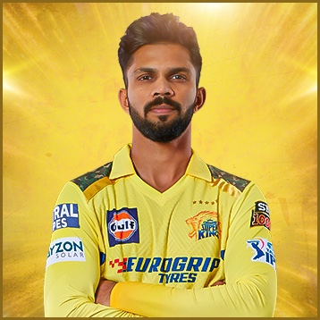
Ruturaj Gaikwad (Captian)
16 matches, 635 runs and high score of 101* in the 2021 edition of the league, Ruturaj Gaikwad was retained
by the CSK ahead of the 2022 edition of the league for INR 6 crore. The opening batter who hails from Pune,
Ruturaj Gaikwad has been a consistent performer for his state team Maharashtra. He was the highest
run-getter for Maharashtra in the league stage of the Syed Mushtaq Ali Trophy 2018-19. At the IPL 2019
Player Auction, the Chennai Super Kings secured his services at his base price of INR 20 lacs. He has been
their most consistent opener and will look to do the same come April and May.
On 2 October 2021, Gaikwad scored his first IPL century, with 101 not out against the Rajasthan Royals in
the 2021 tournament.[53] On 15 October, Chennai Super Kings beat Kolkata Knight Riders by 27 runs in the
finals with Gaikwad contributing to CSK's total by scoring 32 runs off 27 balls. He won the Orange Cap for
scoring the most runs (635) in the 2021 tournament and was also awarded the Emerging Player of the Year
award.[54]
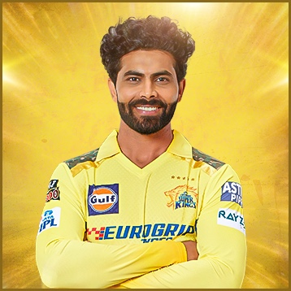
Ravindra jadeja (All Rounder )
Jadeja’s love affair with runs and wickets continued at IPL 2021 and he was the highest paid retention for
CSK ahead of the 2022 edition of the league. The outstanding all-rounder was retained for INR 16 crore.
Earlier, he became the third retained player by CSK ahead of the IPL 2018 Player Auction. Ravindra Jadeja
has always been MS Dhoni’s go-to-man when he needed to break a partnership and the left-armer has delivered
the goods on many occasions. His presence gives Dhoni the extra cushion of playing an additional batsman if
needed. Jadeja has been an enigma right since his advent in international cricket. He was part of the
victorious Indian U-19 cricket team that won the World Cup in Malaysia in 2008. His performance in IPL 2008
helped Rajasthan Royals to title victory and earned him the nickname "Rockstar" by his captain Shane Warne.
In 2012 IPL player auction, Jadeja was bought by Chennai Super Kings for approx. Rs. 9.8 Crore, making him
the most expensive player of the year's auction. Jadeja has represented the Gujarat Lions for two seasons
and was back with CSK for the eleventh edition of the league. He has been an integral part of them ever
since.
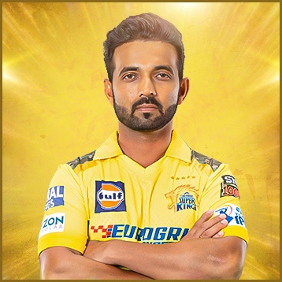
Ajinkya Rahane (BatsMan)
In 2012, Rahane came in limelight when he scored a magnificent century in IPL. The following years helped
him join the international matches. His performance in the 2018 season worsened and his strike rate came
into talk. He is no longer included in India's ODI and T20I squads for international matches because of this
reason. IPL 2019 was important for Rahane as he played some useful innings for Rajasthan; he also smashed a
century against Delhi Capitals in the 2019 season and became the highest run scorer for Rajasthan Royals in
that season. In November 2019, Rahane was transferred from Rajasthan Royals to Delhi Capitals ahead of the
2020 Indian Premier League. The franchise retained him for the IPL 2021 season.[85] However, Rahane was
barely included in any match for the 2021 season after some bad innings in the 2020 season. In February
2022, he was bought by the Kolkata Knight Riders in the auction for the 2022 Indian Premier League
tournament.[86]
He is bought by Chennai Super Kings to play in the IPL 2023 season for INR. 50 Lakh in the IPL auction held
on 23 December 2022.[87] In the 2023 edition of IPL, Rahane proved to be an integral part of the title
winning CSK team where he came to bat at no.3, scoring at an extraordinary strike rate of 175+ in all the
games. His crucial knocks proved to be match winning for CSK in the finals. This was Rahane's first IPL
title.
.
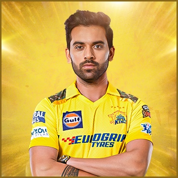
Deepak Chahar (Bowler)
CSK boy, Deepak Chahar is back with CSK for the 2022 edition of the league. It turned out to be fierce
bidding war for the swing bowler, with SRH and Delhi Capitals starting the bids for Deepak and later were
joined by RR and CSK for the same. It was as if the CSK had decided to get their man back into the ranks and
finally succeeded in the same with a price of INR 14 crore. The Agra-born medium pacer, Deepak Chahar was a
part of the Rajasthan Royals squad in 2012, donned the RPS jersey for two seasons and was bought by the
Chennai Super Kings in the eleventh edition of the league. Chahar has risen through the ranks and his
ability to swing the new ball both ways with control is what makes him a lot more lethal at the top. Chahar
also possesses the ability to hit handy runs lower down the order and his current exploits, a match winning
knock against Sri Lanka and a 34 ball 54 against South Africa has been the talk of the town. Ahead of the
2018 season, Deepak was picked by the Chennai Super Kings and medium-pacer had a breakthrough 2018 IPL
season taking 10 wickets in 12 matches. He was then subsequently rewarded with an India call-up in
limited-overs cricket.A bowler in the mould of Praveen Kumar and Bhuvneshwar Kumar, Chahar learned swing
bowling at his father's coaching academy. Dhoni used him shrewdly with the new ball, often bowling him for
three overs in the powerplay. Chahar also kept working on his other skills and turned himself into a capable
bowler at the death, which was evident in that record-breaking spell against Bangladesh: four of his six
wickets, including a hat-trick, came with a wet old ball in dewy conditions.
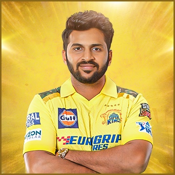
Shardul Thakur (All Rounder)
Thakur was initially criticized for his lack of height for a fast bowler (he is 5 ft 9 in) and for being
overweight for some time (83 kg) but he ultimately became a part of Mumbai domestic team.[3]
In November 2012, he made his first-class debut for Mumbai against Rajasthan at Jaipur in the 2012–13 Ranji
Trophy.[4] He did not have a good start to his career as he took four wickets at a bowling average of 82.0
from his first four games. In 2013–14 Ranji season, he took 27 wickets at 26.25 from six games, with one
five-wicket haul. In the 2014-15 Ranji season, he took 48 wickets at 20.81 from ten games with five
five-wicket hauls.[5] He made his List A debut on 27 February 2014, for Mumbai in the 2013–14 Vijay Hazare
Trophy.
In 2015-16 Ranji Trophy final, he took eight wickets against Saurashtra and led Mumbai to win its 41st Ranji
Trophy title.Thakur was signed by Kings XI Punjab at the 2014 IPL player auction ahead of the 2015 season of
Indian Premier League and made his debut against Delhi Daredevils, taking one wicket in his four overs. In
March 2017, he was acquired by Rising Pune Supergiants for the tenth season of the IPL[31] and in January
2018, was bought by Chennai Super Kings ahead of the next season.
In 2019 Chennai reached the IPL final; Thakur took two wickets but was out off the final ball of the match
with two runs required for victory.[citation needed] In 2021 he was the leading wicket-taker for Chennai
with 21 wickets during the season.[citation needed]
In February 2022, he was bought by Delhi Capitals in the auction for the 2022 Indian Premier League
tournament.[32] After playing in 14 matches during the season, in November 2022 he was traded to the Kolkata
Knight Riders in exchange for Aman Khan ahead of the auctions for the 2023 season of IPL[33] securing a
staggering deal of ₹10.75 crore (US$1.3 million).[34]
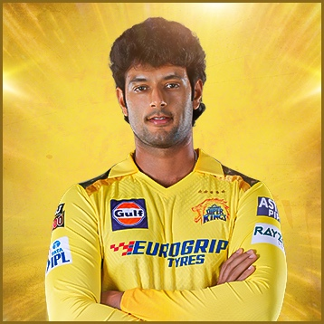
Shivam Dube (All Rounder)
He made his first-class debut for Mumbai in the 2017–18 Ranji Trophy on 7 December 2017.[8] In the first
innings, he took his maiden five-wicket haul in first-class cricket.[9] On 2 November 2018, in Mumbai's
match against Railways in the 2018–19 Ranji Trophy, he scored his maiden century in first-class cricket.[10]
In his next match, against Karnataka, he took another five-wicket haul, with seven wickets for 54 runs.[11]
On 17 December 2018, in the Ranji Trophy match against Baroda, Dube hit five sixes in one over.[12] It was
the second time he had scored five sixes in an over, after doing it against Pravin Tambe in the Mumbai T20
League in March,[13] where he was also named the player of the tournament.[14] He was the leading
wicket-taker for Mumbai in the Ranji Trophy in 2018, with 23 dismissals in eight matches.[15]
In December 2018, he was bought by the Royal Challengers Bangalore in the player auction for the 2019 Indian
Premier League.[16][17] In February 2021, Dube was bought by the Rajasthan Royals in the IPL auction ahead
of the 2021 Indian Premier League.[18] In February 2022, he was bought by the Chennai Super Kings in the
auction for the 2022 Indian Premier League tournament.In December 2018, he was bought by the Royal
Challengers Bangalore in the player auction for the 2019 Indian Premier League.[16][17] In February 2021,
Dube was bought by the Rajasthan Royals in the IPL auction ahead of the 2021 Indian Premier League.[18] In
February 2022, he was bought by the Chennai Super Kings in the auction for the 2022 Indian Premier League
tournament.[19]
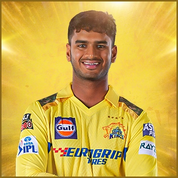
Avanish Rao Aravelly (Wicket Keeper)
Aravelly Avinash, born on June 2, 2005, is a young and rising wicket-keeper batter. Hailing from Hyderabad, the 18-year-old sensation has already established himself as a formidable force in the middle-order. In the Vinoo Mankad Trophy of 2023, he showcased his prowess by amassing 274 runs in 6 innings with an impressive strike rate of 148.10, the highest among batters who scored over 200 runs in the competition. Avanish recently made his List A debut for Hyderabad. Nonetheless, he is recognized as a player with immense potential. Having represented India in the U19 Asia Cup, he is now poised to take on the role of India's primary wicket-keeper at the U19 World Cup in South Africa, further solidifying his status as one to watch. Aravelly Avanish, a dynamic left-handed wicket-keeper batsman who typically occupies the middle-order position, captured attention recently with his remarkable performance during a game in the Quadrangular series. Despite India 'A' U19 struggling at 95/5 while chasing 376, Avanish displayed superhuman prowess by smashing 163 runs off only 93 deliveries, steering his team to victory. His extraordinary innings included a stunning display of power hitting, as he launched 12 sixes. With this performance, it was just a formality that any team would pick him up in the Indian T20 league. The Chennai management swiftly acquired him as soon as his name popped in the 2024 auction. His commitment and consistency will be a key factor for his bright future.
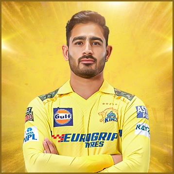
Mukesh Choudhary (Bowler)
Mukesh Choudhary is a left-arm seamer who was born on July 6, 1996, in Bhilwara, Rajasthan, who represents Maharashtra in domestic cricket. Mukesh made his domestic cricket debut in 2017, representing Maharashtra in the 2017-18 Ranji Trophy. He also participated in the 2019-20 Vijay Hazare Trophy and the 2019-20 Syed Mushtaq Ali Trophy for Maharashtra. He made his first-class cricket debut on November 9, 2017, representing the Maharashtra team in the Ranji Trophy. To date, he has played 13 first-class matches and claimed a total of 38 wickets so far. Impressed by Mukesh's strong performances in short-format cricket, he was selected by the Chennai franchise during the Indian T20 League Mega Auction 2022. He made his IPL debut on March 31, 2022, playing against the Lucknow team. As of now, Mukesh has featured in 13 Indian T20 League matches and has taken 16 wickets. Since 2022, he has been part of the Chennai team and will continue to represent the team in yellow yet again in 2024 after a title-winning 2023 season.
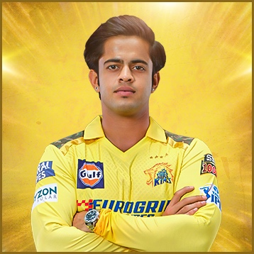
Prashant Solanki (Bowler)
Prashant Solanki is an Indian cricketer.[1] He made his List A debut on 25 February 2021, for Mumbai in the 2020–21 Vijay Hazare Trophy, taking a five-wicket haul in the match.[2] He made his Twenty20 debut on 9 November 2021, for Mumbai in the 2021–22 Syed Mushtaq Ali Trophy.[3] In February 2022, he was bought by the Chennai Super Kings in the auction for the 2022 Indian Premier League tournament.[4] He made his first-class debut on 24 February 2022, for Mumbai in the 2021–22 Ranji Trophy.[5]
Prasant Solanki played cricket alongside Pushkar Sharma on the Mumbai U-16 team during the 2014–15 season.[6]
Prasant Solanki played cricket alongside Pushkar Sharma on the Mumbai U-16 team during the 2014–15 season.[6]
Prasant Solanki played cricket alongside Pushkar Sharma on the Mumbai U-16 team during the 2014–15 season.[6]
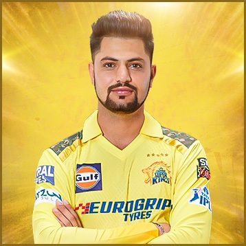
Sameer Rizvi (BatsMan)
He began playing cricket in his childhood at the tender age of eleven, and he began practicing the sport at Gandhibagh Academy in Meerut, where he was coached under the watchful eyes of his maternal uncle Tankeeb Akhtar.[2] In a Ranji Trophy match between Uttar Pradesh and Saurashtra in 2011, Rizvi got the attention of Uttar Pradesh captain Suresh Raina, as the latter was impressed by the fielding efforts of Rizvi, who was only eight years old at the time.[2] Raina eventually spotted the talent in Rizvi and gifted him his sunglasses.[2] It was his maternal uncle, Tankeeb Akhtar, who inspired Sameer to take up cricket seriously, and Tankeeb also faced the wrath of Sameer's father for distracting Sameer from focusing on studies.[4]
Rizvi used to open the batting till the Under-16 level, but he was convinced to bat at the middle order by one of his coaches after witnessing his natural game of batting against spin bowling. Over the years, he raised his reputation for big hitting. He is reported to have commenced his education quite late in his career and completed his class 10 exams only after turning 20.[4]
At one point in time, he stepped up as the main breadwinner of his family at such a young age after his father was diagnosed with a brain haemorrhage in 2020.[2] His father Haseen Rizvi works as a property dealer.He is also nicknamed right-handed Suresh Raina and received the relevant moniker on social media due to his playing style resembling that of Raina.[2] He has also played age-group cricket representing India at Under-19 level.[3]
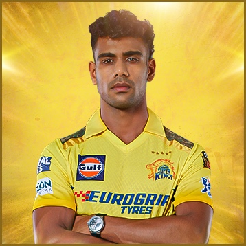
Rajvardhan Hangargekar (Bowler)
Rajvardhan Hangargekar (born 10 November 2002) is an Indian cricketer.[2][3] He plays for Maharashtra in domestic cricket and Chennai Super Kings in the Indian Premier League. He made his Twenty20 debut on 16 January 2021, for Maharashtra in the 2020–21 Syed Mushtaq Ali Trophy.[4] He made his List A debut on 21 February 2021, for Maharashtra in the 2020–21 Vijay Hazare Trophy.[5] In December 2021, he was named in India's team for the 2022 ICC Under-19 Cricket World Cup in the West Indies.[6]
In February 2022, he was bought by the Chennai Super Kings in the auction for the 2022 Indian Premier League tournament.[7][8]
On 31 March 2023, he made his IPL debut for Chennai Super Kings in the 2023 Indian Premier League.[9]
On 19 July 2023, In the 2023 ACC Emerging Teams Asia Cup match against Pakistan A cricket team Hangargekar Picked up 5 Wickets conceding only 42 runs Guiding India A cricket team to a resounding Victory.
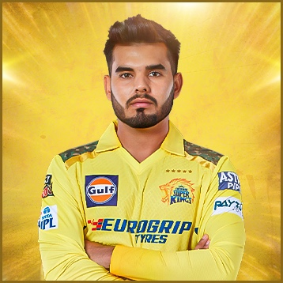
Nishant Sindhu (BatsMan)
The Indian Under-19 cricket team represents the nation of India in cricket at Under-19 level. The team has won five Under-19 World Cups and has the best win percentage in ODIs (77%) among all Under-19 national teams.[1]
The team has won the Under-19 World Cup five times and finished runners-up thrice. In 2000, they won it under the captaincy of Mohammad Kaif, in 2008, they won it under Virat Kohli's leadership, in 2012 under Unmukt Chand, in 2018 under Prithvi Shaw, and in 2022 under Yash Dhull.
The team is currently captained by Uday Saharan and coached by former India cricketer Hrishikesh Kanitkar.[2]
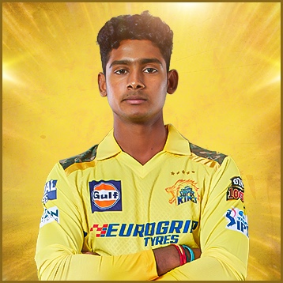
Shaik Rasheed (BatsMan)
Shaik Rasheed is an Indian cricketer.[1][2][3] He was born in Guntur, a city in Andhra Pradesh. He made his first-class debut on 24 February 2022, for Andhra Pradesh against Services in the 2021–22 Ranji Trophy.[4] He made his T20 debut on 16 October 2022, for Andhra Pradesh against Nagaland in the 2022–23 Syed Mushtaq Ali Trophy.[5]
He was also named as vice-captain in India's squad for the 2022 Under-19 Cricket World Cup.[6] His contributions with the bat especially in the semi-final and final helped India win the U-19 World Cup.Shaik Rasheed was included in the Chennai Super Kings' squad from the Emerging Players' Category for IPL 16. CSK bought Rasheed for US $20,000 for the 2023 season. [9]
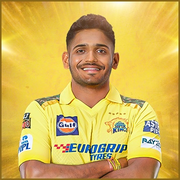
Tushar Deshpande (Bowler)
Tushar Deshpande is an Indian Fast Bowler cricketer who plays for Mumbai in domestic cricket and for Chennai Super Kings in the Indian Premier League.[1] He made his first-class debut for Mumbai in the 2016–17 Ranji Trophy on 6 October 2016.[2] He made his List A debut for Mumbai in the 2018–19 Vijay Hazare Trophy on 19 September 2018.[3] He took his first five-wicket haul in List A cricket in the quarter-finals of the tournament on 14 October 2018.[4] The following month, he was named as one of eight players to watch ahead of the 2018–19 Ranji Trophy.[5]
In August 2019, he was named in the India Blue team's squad for the 2019–20 Duleep Trophy.[6][7] In the 2020 IPL auction, he was bought by the Delhi Capitals ahead of the 2020 Indian Premier League.[8] In February 2022, he was bought by the Chennai Super Kings in the auction for the 2022 Indian Premier League tournament.[9] He became the first Impact Player in the IPL history.
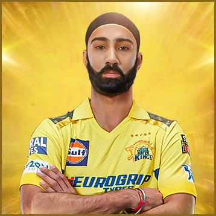
Simarjeet Singh (Bowler)
Simarjeet Singh is an Indian cricketer who represents Delhi in domestic cricket. He is a right handed batsman and right arm medium pacer.Simarjeet made his List A debut for Delhi in the 2018–19 Vijay Hazare Trophy on 20 September 2018.[2] He made his first-class debut for Delhi in the 2018–19 Ranji Trophy on 20 November 2018.[3] He made his Twenty20 debut on 11 November 2019, for Delhi in the 2019–20 Syed Mushtaq Ali Trophy.[4]
In June 2021, he was named as one of five net bowlers for India's tour of Sri Lanka.[5][6] Following a positive case for COVID-19 in the Indian team, Singh was added to India's main squad for their final two Twenty20 International (T20I) matches of the tour.[7]
In September 2021, Singh was added to the Mumbai Indians squad for the rest of the 2021 Indian Premier League tournament, replacing the injured Arjun Tendulkar.[8] In February 2022, he was bought by the Chennai Super Kings in the auction for the 2022 Indian Premier League tournament.[9]
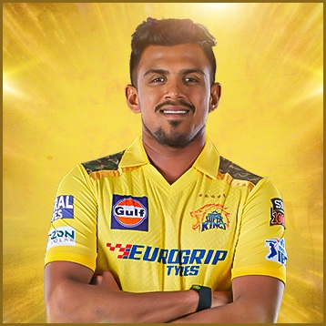
Maheesh Theekshana (Bowler)
Morawakage Maheesh Theekshana is a professional cricketer who plays for the Sri Lanka national cricket team in all three formats of the game. He made his international debut for Sri Lanka in September 2021. Regarded as one of the best T20 bowlers in the world, his bowling action resembles that of former Sri Lankan mystery spinner Ajantha Mendis, who coincidentally happened to be his mentor with the Sri Lanka Army Sports Club, whom he has represented in the Sri Lankan domestic game.he was bought by the Chennai Super Kings in the auction for the 2022 Indian Premier League tournament.[15] During the 2022 edition of the Tata IPL, he broke Rohit Sharma's record to become the youngest ever bowler to take a four-wicket haul in an IPL match as he achieved the
He currently plays for the Chennai Super Kings in the Indian Premier League in club cricket, winning the championship as a key player in 2023.
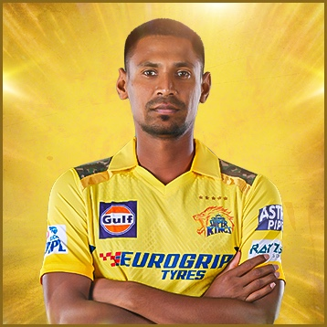
Mustafizur Rahman (Bowler)
Mustafizur Rahman is a Bangladeshi international cricketer. He is one of the best fast bowlers to emerge from Bangladesh.[1][2][3] Born on 6 September 1995, in Satkhira, Bangladesh, Rahman's career took off during the 2015 Bangladesh Premier League when he caught the attention of cricket pundits with his ability to bowl accurate cutters and slower deliveries, earning him the nickname "The Fizz."[4] This talent quickly propelled him to international prominence. He plays for Chennai Super Kings in IPL and is a left-arm fast-medium bowler.[5]
first player to claim 11 wickets in his first two one day international matches. This achievement propelled Bangladesh to a historic series victory over India.[6] He has represented his country in numerous international tournaments, including the ICC Cricket World Cup and the ICC Champions Trophy, and Asia Cup.[7][8] In club career he was acquired by Sunrisers Hyderabad in 2016 with a fee of $208k, where he won his first Indian Premier League (IPL) title.[9][10] He was the 5th highest wicket taker throughout the tournament.[11]
He is the only overseas player to win the Emerging Player Award in 2016 IPL for Sunrisers Hyderabad.[12]He was listed in ICC Men's ODI Team of the Year three times (2015, 2018, 2021) and ICC Men's T20I Team of the Year once (2021).[13] Currently he plays for Chennai Super Kings in Indian Premier League and for Comilla Victorians in Bangladesh Premier League.[14]
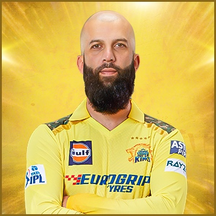
Moeen Ali (All Rounder)
Moeen Munir Ali OBE is an English cricketer who serves as vice-captain for England in limited overs cricket. He played Test cricket for England between 2014 and 2023, when he became only the 16th person to hit 3,000 runs and take 200 wickets in Tests. In domestic cricket he represents Warwickshire, having previously played for Worcestershire. He has also played in multiple Twenty20 leagues, including for Royal Challengers Bangalore and Chennai Super Kings in the Indian Premier League.
Ali made his debuts in all three formats in 2014, He was part of the England teams that won the 2019 Cricket World Cup[1] and 2022 T20 World Cup.[2]
On 7 June 2023, Ali announced he was coming out of retirement for England Test team[3] following an injury to first choice spinner Jack Leach, just ahead of the 2023 Ashes Series. He fully retired from Test cricket at the end of the Ashes series.[4]
Ali plays as an all-rounder, batting left-handed and bowling off spin.
Matheesha Pathirana (Bowler)
Matheesha Pathirana is a professional Sri Lankan cricketer currently plays limited overs cricket for the national team.[1] He has been referred to as Baby Malinga, as he has modelled his bowling action after Lasith Malinga in slingy action.In April 2022, he was signed by the Chennai Super Kings, as a replacement for Adam Milne for the 2022 Indian Premier League.[8] He made his debut against the Gujarat Titans.[9][10] In the very first ball, he took the wicket of Shubman Gill, becoming the first Sri Lankan and ninth overall to achieve the feat in IPL.[11][12][13] In July 2022, he was signed by the Kandy Falcons for the third edition of the Lanka Premier League.[14] He became the youngest Overseas Player to win an IPL tournament after CSK won the 2023 IPL.
Prior to his Twenty20 debut, he was part of Sri Lanka's squad for the 2020 Under-19 Cricket World Cup.[4] In January 2022, he was named in Sri Lanka's team for the 2022 ICC Under-19 Cricket World Cup in the West Indies.[5] He was a key member of the Chennai Super Kings team which won the IPL trophy in 2023. He picked 19 wickets in the 2023 edition of the IPL. He became the youngest foreign player to win an IPL trophy.
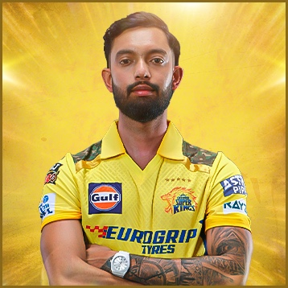
Ajay Mandal (All Rounder)
Ajay Mandal has been picked by Chennai Super Kings for the IPL 2023 edition as an all-rounder batsman. He was picked by CSK for INR 250,000[6] As of 7 April 2023, Ajay Mandal is yet to debut in the IPL.Ajay Jadav Mandal is an Indian cricketer.[1] He made his first-class debut for Chhattisgarh in the 2016–17 Ranji Trophy on 6 October 2016.[2] He made his Twenty20 debut for Chhattisgarh in the 2016–17 Inter State Twenty-20 Tournament on 29 January 2017.[3] He made his List A debut for Chhattisgarh in the 2018–19 Vijay Hazare Trophy on 30 September 2018.[4]
For the 2023 Season Ajay Mandal has signed for Doncaster Town Cricket Club[5] as their overseas pro.
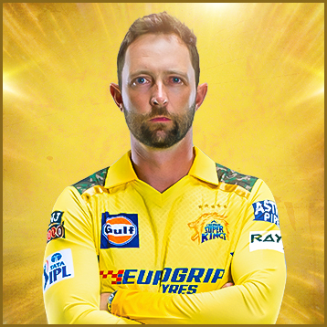
Devon Conway (BatsMan)
New Zealand cricketer who plays for the New Zealand cricket team in all formats.[1][2] In March 2020, the International Cricket Council (ICC) confirmed that Conway, who was born in South Africa, would be eligible to play for New Zealand from 28 August 2020.[3][4] In May 2020, New Zealand Cricket awarded him a central contract, ahead of the 2020–21 season.In April 2020, Conway was named the men's domestic player of the year by New Zealand Cricket at their annual award ceremony.[25][26] The following month, he was signed by Somerset County Cricket Club to play in the 2021 T20 Blast in England.[27]
Conway made his international debut for New Zealand in November 2020.[7] In June 2021, in his first Test match, Conway became the second batter for New Zealand after Mathew Sinclair, and seventh overall, to score a double century on his Test debut.[8] During the same month, Conway was also a member of the New Zealand team that won the 2021 ICC World Test Championship final, and had a key contribution scoring 54 runs in the first innings. He was named the ICC Men's Player of the Month for June 2021[9] and in April 2022, Conway was named as one of the five Wisden Cricketers of the Year.[10]
Mitchell Santner (All Rounder)
Mitchell Josef Santner is a New Zealand international cricketer who plays all forms of the game. Domestically, he plays for Northern Districts cricket team. He is a bowling all-rounder who bats left-handed, and bowls slow left-arm orthodox spin. He has been involved in the highest 7th wicket partnership for New Zealand in Tests. Occasionally he plays, golf as well.
Santner was elevated towards the New Zealand team after a promising 2014–15 domestic season. He was named in the one-day squad for the tour of England following the retirement of Daniel Vettori after the 2015 World Cup as New Zealand searched for another left-arm spin option. Santner was then drafted into the touring squad at the start of the England tour to cover for the absence of the players at the Indian International debut at Edgbaston having played just 19 List matches for Northern Districts.
season of Major League Cricket.[24]
In the group stage of the 2023 World Cup against Netherlands, Santner's five-wicket haul was the first by a New Zealand spinner in a World Cup match.[25]
On 13 February, 2024, Santner is named as Captain for T20 international series against Australia, with Tim Southee only available for Game 1.[26]
In November 2020, Santner captained New Zealand for the first time in an international fixture, leading the team in the
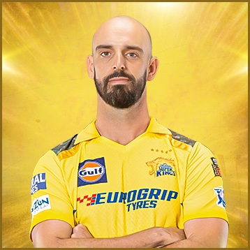
Daryl Mitchell (All Rounder)
Daryl Joseph Mitchell is a New Zealand cricketer who plays all formats of the game for the New Zealand national team and represents Canterbury in domestic cricket. He is the son of New Zealand rugby union coach and former player John Mitchell.[1][2]
After appearing in over 200 domestic matches in New Zealand's domestic cricket system, Mitchell finally made his international debut in 2019.[3] Mitchell is known for his adaptability and went onto cement his reputation of playing any given role assigned to him at international level.[4][5] He nailed his reputation as a bankable finisher especially noted for his ability to finish the games. He had been one of the most impactful players in the Super Smash and renowned for having hit the most sixes in Super Smash prior to his late entry to international cricket.[6] He is often confused by fans and English cricket pundits as his namesake Daryl Mitchell is also a right-handed batting all-rounder originally from England who has predominantly played for Worcestershire at county level.[7]
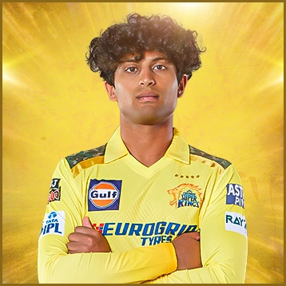
Rachin Ravindra (All Rounder)
Rachin Ravindra is a New Zealand international cricketer.[1] He made his international debut for the New Zealand cricket team in September 2021.
In December 2023, Rachin Ravindra was signed by the Chennai Super Kings in the player auction for the 2024 Indian Premier League.On 4 November 2023, during a group stage match against Pakistan, Rachin Ravindra became the second youngest batter after Sachin Tendulkar in the ODI World Cup history to complete 500 runs.[49] He also broke Tendulkar's record of most World Cup centuries before the age of 24 years when he completed his century against Pakistan.[50][51] He also became the first batter in World Cup history to score three centuries on World Cup debut.[52] He also became the first New Zealander batter to score three World Cup centuries and set the record for most World Cup centuries scored by a player for New Zealand in World Cup history.[53][54][55]
On 9 November 2023, during a group stage match against Sri Lanka, he broke Jonny Bairstow's record for having scored the most number of runs by a player in his debut World Cup with 550 runs.[56][57] He also surpassed Tendulkar's record for having scored the most runs in a single edition of the World Cup before turning 25 with a tally of 550 runs in 9 matches.[58]